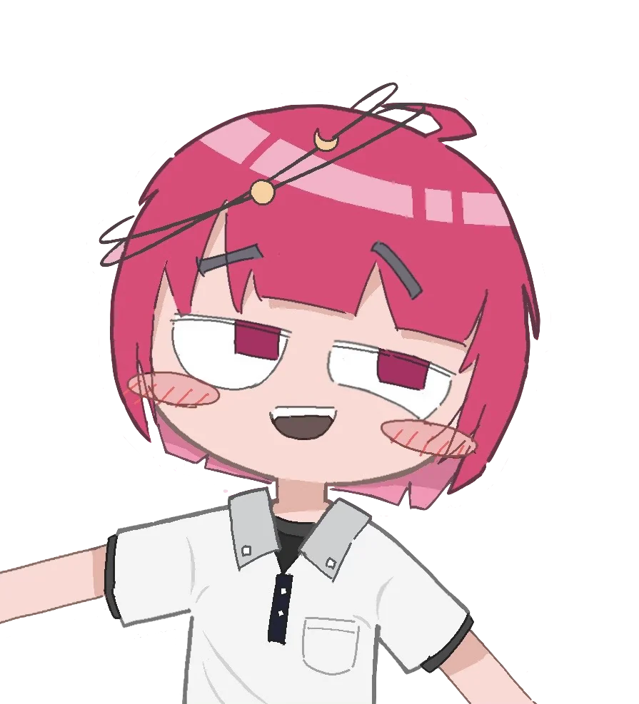
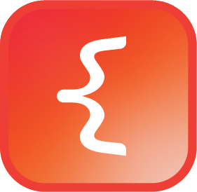
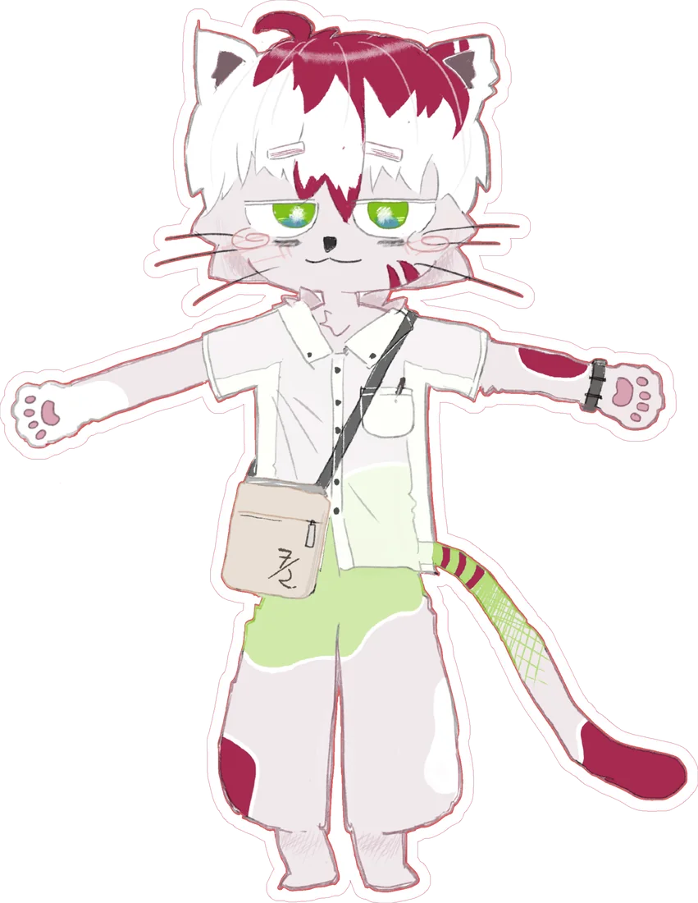

halvfjerde宋智厚和泉流希Owen Song流泉
삼쩌모
넓고 얕게도, 좁고 깊게도 아닌 넓고 깊게를 추구하다.

경기도의 한 외국어고등학교에 다니는 학생입니다. 창작과 언어, 개발 등 여러 분야에 관심을 두고 있는데, 신경 쓸 게 워낙 많아서 늘 시간에 쪼들리며 삽니다.
부르실 때는 ‘쩌모’나 ‘삼쩌모’, 내지는 호인 ‘유천’으로 불러 주세요.
이름
- 본명
- 송지후·宋智厚지혜가 두텁다는 뜻
- 영어
- Owen Song오우인(오웬) 송. 유럽어에서는 ‘에우게니우스’의 변형을 주로 사용함
- 일본어
- 和泉 流希이즈미 루키
- 호
- 流泉유천, 흐르는 샘물
- 니크네임
- 삼쩌모·halvfjerde흔히 ‘쩌모’로 줄여서 부르곤 함
프로우파일
- 출생
- 2010. 4. 3.
- 국적
- 대한민국·경기도
- 학력
- 고교 재학·○○외국어고등학교
- 언어
- 한국어·영어·일본어·관화
- 신체
- 171 cm·45 kg
- 성별·지향
- 남성·범성애자
관심
학문언어학도시학사회학수학지구과학…
취미창작개발디자인사진그림만년필마작…
학문 쪽으로는 문리과, 사회, 공학에 걸쳐 여러 분야에 관심이 있습니다만 아직은 아주 많은 지식을 가지고 있는 것은 아닙니다. 취미는 오래 갈 것은 아주 오래 가고 금방 사라질 것은 며칠도 안 가는 편이라, 꽤 오래 가고 있는 것만 적어 두었습니다.
제작
-
쩌모위키
소규모 창작 위키w.halv.kr
-
Vierthalb피이어트할프
미이디어위키 테에마w.halv.kr/Vierthalb
-

CurlyBrace커얼리브레이스웨브 마아크다운·LaTeX 편집기halv.kr/curlybrace -
blógue블로구
개인 블로그b.halv.kr
-
사전
개인 인공어 사전d.halv.kr
창작
- 세계
- 맑은 빛으로합작 가상도시 세계2024
- 인공어
- 부캐
-

純 쥰 시라타마 고양이 쥰. Fursona